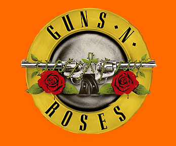

|  |
Desde o surgimento nos anos 80, a Legião Urbana marcou a história da música brasileira com suas letras profundas e melódicas. Fundada por Renato Russo em Brasília, a banda se tornou um ícone cultural, refletindo as inquietações e angústias de uma geração.
Com álbuns como "Legião Urbana" e "Dois", a banda conquistou uma legião de fãs em todo o país. Suas letras, muitas vezes poéticas e filosóficas, tocaram o coração de milhões, tornando-se parte da trilha sonora da juventude brasileira.
|
|
A Legião Urbana não era apenas uma banda; era uma voz para os excluídos, os marginalizados e os desiludidos. As canções como "Pais e Filhos" e "Tempo Perdido" ecoavam os sentimentos de uma geração em busca de identidade e propósito.
Apesar das tragédias pessoais e dos desafios enfrentados, Renato Russo continuou a escrever e a compor, deixando um legado que transcendeu sua própria vida. Seu talento como músico e poeta continua a inspirar novas gerações até os dias de hoje.
O Legião Urbana não era apenas uma banda de rock; era uma instituição cultural que moldou a consciência coletiva do Brasil. E embora Renato Russo tenha partido, sua música e suas palavras permanecem vivas, eternizando seu lugar como um dos maiores artistas da música brasileira.